2 Exloratory Data Analysis - I
2.1 Objectives
- Remember how to load and explore datasets in R
- Conduct basic descriptive data analysis
- Undestand and visualize distribution of and relationship between variables
2.2 R functions covered this week
load()read_excel()str()glimpse()table()summary()mutate()case_when()ggplot()corr ()
2.3 Why is EDA so important?
- Every regression analysis is based on proper EDA; EDA often used for “hypothesis generation” (i.e. finding things that could be interesting to study).
- EDA helps understand the data and issues in the data. The better we understand the data, the better we can “fine-tune” our regression model later.
- EDA helps prepping data for regression (i.e. “cleaning”; “pre-processing”). Small errors in the data can lead to completely wrong conclusions or even prevent the model from working altogether.
2.4 Importing data into R
The first step of any data analysis is getting data into R. To get started, we first need to follow some preparatory steps
In this course, we will use data on NBA players (Basketball). Usually, you need to first download the data and documentation and save them in a folder on your own computer. We have already done this, and provide the data for you here.
Install R and Rstudio. If you don’t already have R installed, here is a link to how it is done (hyperlink)
In the folder which you will use for this class, create a new R project. You will see that all files appear in the bottom right window in R studio.
Now, Let’s get started.
2.5 Import data into R
First, we need to install some packages.
Now, let’s import the data.You can see in the folder that we have 2 cvs files.
We can use read_delim() or read_csv function. Note that you need other function for Stata datasets (read_data from teh haven package). To load Rdata files, you use the load() function.
Make sure you name the correct sub-directory in case you saved the data a sub-folder of your project folder (which I have done).
# import data
nba_salaries <- read_csv("../datasets/nba/salaries_1985to2018.csv", show_col_types = FALSE)
nba_players <- read_csv("../datasets/nba/players.csv", show_col_types = FALSE)Great, the two dataframes should appear in your environment in the upper right side in R studio.
Let’s take a quick look at these trend dataframe using str() function The str() function shows the number of rows (observations) and columns (variables). It also provides information on the name of each column, its type and an example of some of the values in each column.
## spc_tbl_ [4,685 × 25] (S3: spec_tbl_df/tbl_df/tbl/data.frame)
## $ index : num [1:4685] 0 1 2 3 4 5 6 7 8 9 ...
## $ _id : chr [1:4685] "abdelal01" "abdulza01" "abdulka01" "abdulma02" ...
## $ birthDate : chr [1:4685] "June 24, 1968" "April 7, 1946" "April 16, 1947" "March 9, 1969" ...
## $ birthPlace : chr [1:4685] "Cairo, Egypt" "Brooklyn, New York" "New York, New York" "Gulfport, Mississippi" ...
## $ career_AST : num [1:4685] 0.3 1.2 3.6 3.5 1.1 2.5 1.2 1 0.7 0.5 ...
## $ career_FG% : chr [1:4685] "50.2" "42.8" "55.9" "44.2" ...
## $ career_FG3%: chr [1:4685] "0.0" NA "5.6" "35.4" ...
## $ career_FT% : chr [1:4685] "70.1" "72.8" "72.1" "90.5" ...
## $ career_G : num [1:4685] 256 505 1560 586 236 830 319 1 56 174 ...
## $ career_PER : chr [1:4685] "13.0" "15.1" "24.6" "15.4" ...
## $ career_PTS : num [1:4685] 5.7 9 24.6 14.6 7.8 18.1 5.6 0 9.5 5.3 ...
## $ career_TRB : chr [1:4685] "3.3" "8.0" "11.2" "1.9" ...
## $ career_WS : num [1:4685] 4.8 17.5 273.4 25.2 3.5 ...
## $ career_eFG%: chr [1:4685] "50.2" NA "55.9" "47.2" ...
## $ college : chr [1:4685] "Duke University" "Iowa State University" "University of California, Los Angeles" "Louisiana State University" ...
## $ draft_pick : chr [1:4685] "25th overall" "5th overall" "1st overall" "3rd overall" ...
## $ draft_round: chr [1:4685] "1st round" "1st round" "1st round" "1st round" ...
## $ draft_team : chr [1:4685] "Portland Trail Blazers" "Cincinnati Royals" "Milwaukee Bucks" "Denver Nuggets" ...
## $ draft_year : chr [1:4685] "1990" "1968" "1969" "1990" ...
## $ height : chr [1:4685] "6-10" "6-9" "7-2" "6-1" ...
## $ highSchool : chr [1:4685] "Bloomfield in Bloomfield, New Jersey" "John Jay in Brooklyn, New York" "Power Memorial in New York, New York" "Gulfport in Gulfport, Mississippi" ...
## $ name : chr [1:4685] "Alaa Abdelnaby" "Zaid Abdul-Aziz" "Kareem Abdul-Jabbar" "Mahmoud Abdul-Rauf" ...
## $ position : chr [1:4685] "Power Forward" "Power Forward and Center" "Center" "Point Guard" ...
## $ shoots : chr [1:4685] "Right" "Right" "Right" "Right" ...
## $ weight : chr [1:4685] "240lb" "235lb" "225lb" "162lb" ...
## - attr(*, "spec")=
## .. cols(
## .. index = col_double(),
## .. `_id` = col_character(),
## .. birthDate = col_character(),
## .. birthPlace = col_character(),
## .. career_AST = col_double(),
## .. `career_FG%` = col_character(),
## .. `career_FG3%` = col_character(),
## .. `career_FT%` = col_character(),
## .. career_G = col_double(),
## .. career_PER = col_character(),
## .. career_PTS = col_double(),
## .. career_TRB = col_character(),
## .. career_WS = col_double(),
## .. `career_eFG%` = col_character(),
## .. college = col_character(),
## .. draft_pick = col_character(),
## .. draft_round = col_character(),
## .. draft_team = col_character(),
## .. draft_year = col_character(),
## .. height = col_character(),
## .. highSchool = col_character(),
## .. name = col_character(),
## .. position = col_character(),
## .. shoots = col_character(),
## .. weight = col_character()
## .. )
## - attr(*, "problems")=<externalptr>## spc_tbl_ [14,163 × 8] (S3: spec_tbl_df/tbl_df/tbl/data.frame)
## $ index : num [1:14163] 0 1 2 3 4 5 6 7 8 9 ...
## $ league : chr [1:14163] "NBA" "NBA" "NBA" "NBA" ...
## $ player_id : chr [1:14163] "abdelal01" "abdelal01" "abdelal01" "abdelal01" ...
## $ salary : num [1:14163] 395000 494000 500000 805000 650000 1530000 2030000 2000000 3000000 1660000 ...
## $ season : chr [1:14163] "1990-91" "1991-92" "1992-93" "1993-94" ...
## $ season_end : num [1:14163] 1991 1992 1993 1994 1995 ...
## $ season_start: num [1:14163] 1990 1991 1992 1993 1994 ...
## $ team : chr [1:14163] "Portland Trail Blazers" "Portland Trail Blazers" "Boston Celtics" "Boston Celtics" ...
## - attr(*, "spec")=
## .. cols(
## .. index = col_double(),
## .. league = col_character(),
## .. player_id = col_character(),
## .. salary = col_double(),
## .. season = col_character(),
## .. season_end = col_double(),
## .. season_start = col_double(),
## .. team = col_character()
## .. )
## - attr(*, "problems")=<externalptr>We see that most variables/ columns, already are in the type which we want. R automatically picked up on the format. Text variables are “chr” for “character”; Numeric variables are “num”. It is very important that you understand the types of columns/ variables that R recognized. If you need a refresher, go here [hyperlink].
2.6 Merge datasets
We see that “nba_salaries” contains the salaries of players for various seasons. “players” contains many career statistics about players, for example, how many points they scored on average per game, across their whole career.
Now we want to link both datasets. We can do this using the merge() function.
An alternative would be join().
2.7 Clean dataset
We can use the select() function to kick out columns and the filter() function to kick out rows. First, we need to look at the codebook and the questionnaire to understand the what each variable refers to (see .txt file “data_description”).
When using the select function, we will also rename the variables to make them more intuitive.
First, let’s filter out Let’s filter all years between 2012-2022.
Afterwards, we use the save() function to store the data as a .Rdata file and the write_excel() function to store the reduced dataset. This way we can simply load that one next time and save time.
2.8 change variables
Let’s do some data cleaning. First, we want to calculate each players’ age at the beginning of each season. Currently, we only have the date of birth and the year for each season.
Second, we want recode the “position” variable. Some players played multiple position, so that info is messy. We want to create varies dummy variables for each position.
# let's calculate age for every season
class(data_nba$birthDate) # nice, it is already a date variable## [1] "character"library(lubridate)
data_nba <- data_nba %>%
mutate(year_of_birth = year(mdy(birthDate)),
age = season_start - year_of_birth)
# let's clean the position
table(data_nba$position)##
## Center
## 1204
## Center and Power Forward
## 686
## Center and Power Forward and Small Forward
## 3
## Center and Small Forward and Power Forward
## 30
## Point Guard
## 1162
## Point Guard and Power Forward and Small Forward and Shooting Guard
## 5
## Point Guard and Shooting Guard
## 573
## Point Guard and Shooting Guard and Small Forward
## 13
## Point Guard and Small Forward
## 3
## Point Guard and Small Forward and Shooting Guard
## 21
## Power Forward
## 667
## Power Forward and Center
## 884
## Power Forward and Center and Small Forward
## 51
## Power Forward and Shooting Guard
## 14
## Power Forward and Shooting Guard and Small Forward
## 31
## Power Forward and Small Forward
## 418
## Power Forward and Small Forward and Center
## 3
## Power Forward and Small Forward and Shooting Guard
## 11
## Shooting Guard
## 735
## Shooting Guard and Point Guard
## 581
## Shooting Guard and Point Guard and Small Forward
## 17
## Shooting Guard and Power Forward and Small Forward
## 25
## Shooting Guard and Small Forward
## 592
## Shooting Guard and Small Forward and Point Guard
## 73
## Shooting Guard and Small Forward and Power Forward
## 25
## Small Forward
## 620
## Small Forward and Center
## 4
## Small Forward and Center and Power Forward
## 72
## Small Forward and Point Guard and Shooting Guard
## 19
## Small Forward and Power Forward
## 425
## Small Forward and Power Forward and Center
## 49
## Small Forward and Power Forward and Shooting Guard
## 33
## Small Forward and Shooting Guard
## 588
## Small Forward and Shooting Guard and Point Guard
## 22
## Small Forward and Shooting Guard and Power Forward
## 69data_nba <- data_nba %>%
mutate(
position_center =
case_when(position = str_detect(position,"Center") ~ 1,
TRUE ~ 0),
position_sf =
case_when(position = str_detect(position,"Small Forward") ~ 1,
TRUE ~ 0),
position_pf =
case_when(position = str_detect(position,"Power Forward") ~ 1,
TRUE ~ 0),
position_sg =
case_when(position = str_detect(position,"Shooting Guard") ~ 1,
TRUE ~ 0),
position_pg =
case_when(position = str_detect(position,"Point Guard") ~ 1,
TRUE ~ 0))
data_nba <- data_nba %>%
select("_id", name, age, weight, height, birthPlace, everything(), -position, -birthDate, -year_of_birth)
save(data_nba, file ="../datasets/nba/data_nba.RData")Now, we want to create a variable that gives us the number of seasons (i.e.years) that each player played. Since the dataset is organized in seasons, each row is one season. Counting the rows per player gives us the years they played.
Almost done. When we browse the dataset, we recognize that the height and weight variables are stored as characters. Let’s convert them to numeric, so we can use them in operations.
## chr [1:9728] "162lb" "223lb" "223lb" "223lb" "223lb" "223lb" "223lb" ...## chr [1:9728] "6-1" "6-6" "6-6" "6-6" "6-6" "6-6" "6-6" "6-6" "6-6" "6-6" ...data_nba <- data_nba %>%
mutate(weight = str_replace(weight, "lb", ""),
weight = as.numeric(weight),
height = str_replace(height, "-", "."),
height = as.numeric(height))
str(data_nba)## tibble [9,728 × 36] (S3: tbl_df/tbl/data.frame)
## $ _id : chr [1:9728] "abdulma02" "abdulta01" "abdulta01" "abdulta01" ...
## $ name : chr [1:9728] "Mahmoud Abdul-Rauf" "Tariq Abdul-Wahad" "Tariq Abdul-Wahad" "Tariq Abdul-Wahad" ...
## $ age : num [1:9728] 31 24 25 26 27 28 29 30 31 32 ...
## $ weight : num [1:9728] 162 223 223 223 223 223 223 223 223 223 ...
## $ height : num [1:9728] 6.1 6.6 6.6 6.6 6.6 6.6 6.6 6.6 6.6 6.6 ...
## $ birthPlace : chr [1:9728] "Gulfport, Mississippi" "Maisons Alfort, France" "Maisons Alfort, France" "Maisons Alfort, France" ...
## $ index.x : num [1:9728] 3 4 4 4 4 4 4 4 4 4 ...
## $ career_AST : num [1:9728] 3.5 1.1 1.1 1.1 1.1 1.1 1.1 1.1 1.1 1.1 ...
## $ career_FG% : chr [1:9728] "44.2" "41.7" "41.7" "41.7" ...
## $ career_FG3% : chr [1:9728] "35.4" "23.7" "23.7" "23.7" ...
## $ career_FT% : chr [1:9728] "90.5" "70.3" "70.3" "70.3" ...
## $ career_G : num [1:9728] 586 236 236 236 236 236 236 236 236 236 ...
## $ career_PER : chr [1:9728] "15.4" "11.4" "11.4" "11.4" ...
## $ career_PTS : num [1:9728] 14.6 7.8 7.8 7.8 7.8 7.8 7.8 7.8 7.8 7.8 ...
## $ career_TRB : chr [1:9728] "1.9" "3.3" "3.3" "3.3" ...
## $ career_WS : num [1:9728] 25.2 3.5 3.5 3.5 3.5 3.5 3.5 3.5 3.5 3.5 ...
## $ career_eFG% : chr [1:9728] "47.2" "42.2" "42.2" "42.2" ...
## $ college : chr [1:9728] "Louisiana State University" "University of Michigan, San Jose State University" "University of Michigan, San Jose State University" "University of Michigan, San Jose State University" ...
## $ draft_pick : chr [1:9728] "3rd overall" "11th overall" "11th overall" "11th overall" ...
## $ draft_round : chr [1:9728] "1st round" "1st round" "1st round" "1st round" ...
## $ draft_team : chr [1:9728] "Denver Nuggets" "Sacramento Kings" "Sacramento Kings" "Sacramento Kings" ...
## $ draft_year : chr [1:9728] "1990" "1997" "1997" "1997" ...
## $ shoots : chr [1:9728] "Right" "Right" "Right" "Right" ...
## $ index.y : num [1:9728] 17 19 20 21 22 23 24 25 26 27 ...
## $ salary : num [1:9728] 798500 1411000 1594920 4500000 5062500 ...
## $ season : chr [1:9728] "2000-01" "1998-99" "1999-00" "2000-01" ...
## $ season_end : num [1:9728] 2001 1999 2000 2001 2002 ...
## $ season_start : num [1:9728] 2000 1998 1999 2000 2001 ...
## $ team : chr [1:9728] "Vancouver Grizzlies" "Sacramento Kings" "Denver Nuggets" "Denver Nuggets" ...
## $ position_center: num [1:9728] 0 0 0 0 0 0 0 0 0 0 ...
## $ position_sf : num [1:9728] 0 0 0 0 0 0 0 0 0 0 ...
## $ position_pf : num [1:9728] 0 0 0 0 0 0 0 0 0 0 ...
## $ position_sg : num [1:9728] 0 1 1 1 1 1 1 1 1 1 ...
## $ position_pg : num [1:9728] 1 0 0 0 0 0 0 0 0 0 ...
## $ "_id" : chr [1:9728] "_id" "_id" "_id" "_id" ...
## $ seasons_played : int [1:9728] 9728 9728 9728 9728 9728 9728 9728 9728 9728 9728 ...2.9 Explore the whole dataset
Now, let’s explore some packages which help us to explore the dataframe as a whole. Let’s start with the DataExplorer package. It is nice to get an overview of variables and the “missingness” of data.
## # A tibble: 1 × 9
## rows columns discrete_columns continuous_columns all_missing_columns
## <int> <int> <int> <int> <int>
## 1 9728 36 18 18 0
## # ℹ 4 more variables: total_missing_values <int>, complete_rows <int>,
## # total_observations <int>, memory_usage <dbl>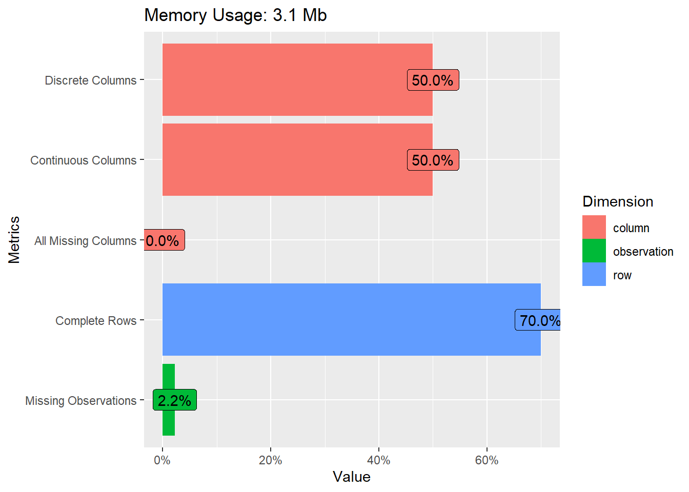
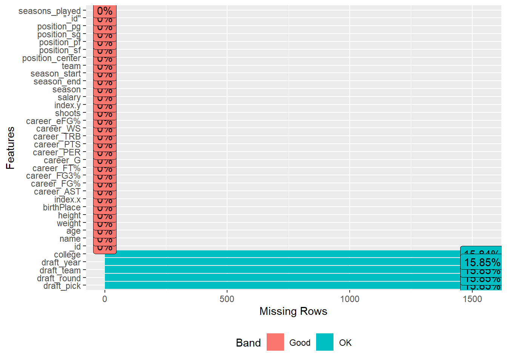
## 11 columns ignored with more than 50 categories.
## X_id: 1794 categories
## name: 1790 categories
## birthPlace: 849 categories
## career_FG.: 333 categories
## career_FG3.: 297 categories
## career_FT.: 413 categories
## career_PER: 274 categories
## career_TRB: 113 categories
## career_eFG.: 310 categories
## college: 380 categories
## draft_pick: 67 categories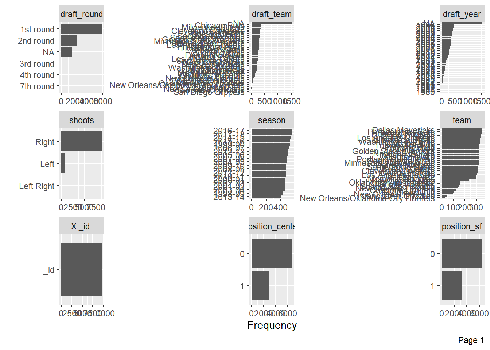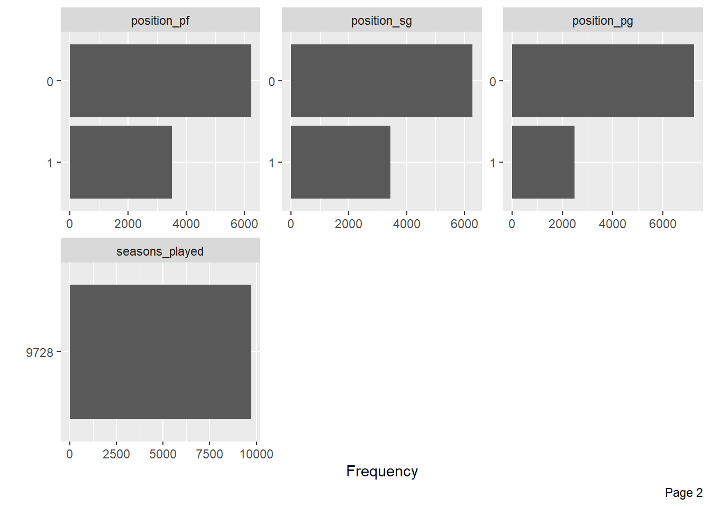
Now, let’s try gtSummary for summary tables. A summary table is always a useful start once you have identified the type of variables you are interested in.
Let’s assume we are interested in age, seasons played, career points, salary, position, and right or left handed (i.e. “shoots”)
## #BlackLivesMatterdata_nba %>%
select(age, seasons_played, shoots, career_PTS, salary, contains("position")) %>%
tbl_summary(
statistic = all_continuous() ~ c("{mean} ({min}, {max})")) | Characteristic | N = 9,7281 |
|---|---|
| age | 27.0 (18.0, 42.0) |
| seasons_played | |
| 9728 | 9,728 (100%) |
| shoots | |
| Left | 856 (8.8%) |
| Left Right | 7 (<0.1%) |
| Right | 8,865 (91%) |
| career_PTS | 8.9 (0.0, 30.1) |
| salary | 4,072,633 (2,706, 34,682,550) |
| position_center | 2,986 (31%) |
| position_sf | 3,222 (33%) |
| position_pf | 3,501 (36%) |
| position_sg | 3,447 (35%) |
| position_pg | 2,489 (26%) |
| 1 Mean (Range); n (%) | |
Now, let’s look at a correlation matrix between all numeric variables in the dataset.
library("corrr")
library("corrplot")
data_nba_numeric <- data_nba %>%
select(where(is.numeric)) %>%
na.omit()
# Find constant columns
constant_columns <- sapply(data_nba_numeric, function(x) length(unique(x)) == 1)
# Remove constant columns
data_nba_numeric <- data_nba_numeric[, !constant_columns]
# as number
corrmatrix <- data_nba_numeric %>%
correlate() %>% # Create correlation data frame (cor_df)
rearrange() %>% # rearrange by correlations
shave()
fashion(corrmatrix)## term career_AST position_pg career_PTS career_G career_WS
## 1 career_AST
## 2 position_pg .61
## 3 career_PTS .61 .08
## 4 career_G .47 .04 .65
## 5 career_WS .52 -.01 .76 .83
## 6 position_sg .19 .22 .12 .09 .01
## 7 salary .35 -.04 .60 .48 .59
## 8 age .18 .03 .18 .49 .36
## 9 position_sf -.08 -.33 .12 .13 .07
## 10 season_end .01 .01 .04 -.17 -.09
## 11 season_start .01 .01 .04 -.17 -.09
## 12 index.y .01 .00 -.01 -.04 -.03
## 13 index.x .01 .00 -.01 -.04 -.03
## 14 height -.31 -.46 -.01 -.02 -.00
## 15 position_pf -.29 -.44 .01 .11 .12
## 16 position_center -.36 -.39 -.10 .04 .08
## 17 weight -.49 -.66 -.06 -.03 .05
## position_sg salary age position_sf season_end season_start index.y index.x
## 1
## 2
## 3
## 4
## 5
## 6
## 7 -.03
## 8 .03 .25
## 9 .18 .03 .03
## 10 .02 .16 -.07 -.04
## 11 .02 .16 -.07 -.04 1.00
## 12 -.05 -.02 -.02 .01 -.03 -.03
## 13 -.06 -.02 -.02 .01 -.03 -.03 1.00
## 14 -.03 .03 -.04 .30 .02 .02 .05 .05
## 15 -.46 .09 .03 .04 -.00 -.00 .01 .01
## 16 -.49 .10 .04 -.37 -.06 -.06 .01 .02
## 17 -.43 .12 -.07 -.01 .04 .04 .04 .04
## height position_pf position_center weight
## 1
## 2
## 3
## 4
## 5
## 6
## 7
## 8
## 9
## 10
## 11
## 12
## 13
## 14
## 15 .15
## 16 .12 .33
## 17 .41 .45 .66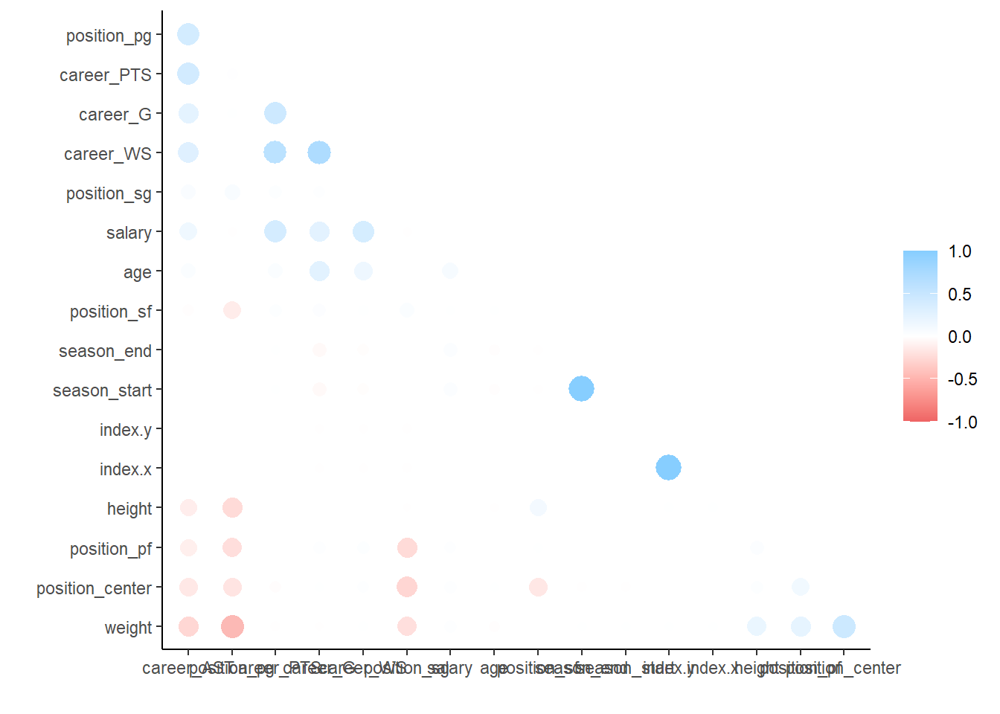
# or...ggplot approach
library("ggcorrplot")
corrmatrix <- round(cor(data_nba_numeric), 1)
ggcorrplot(corrmatrix,
method = "circle",
type="lower")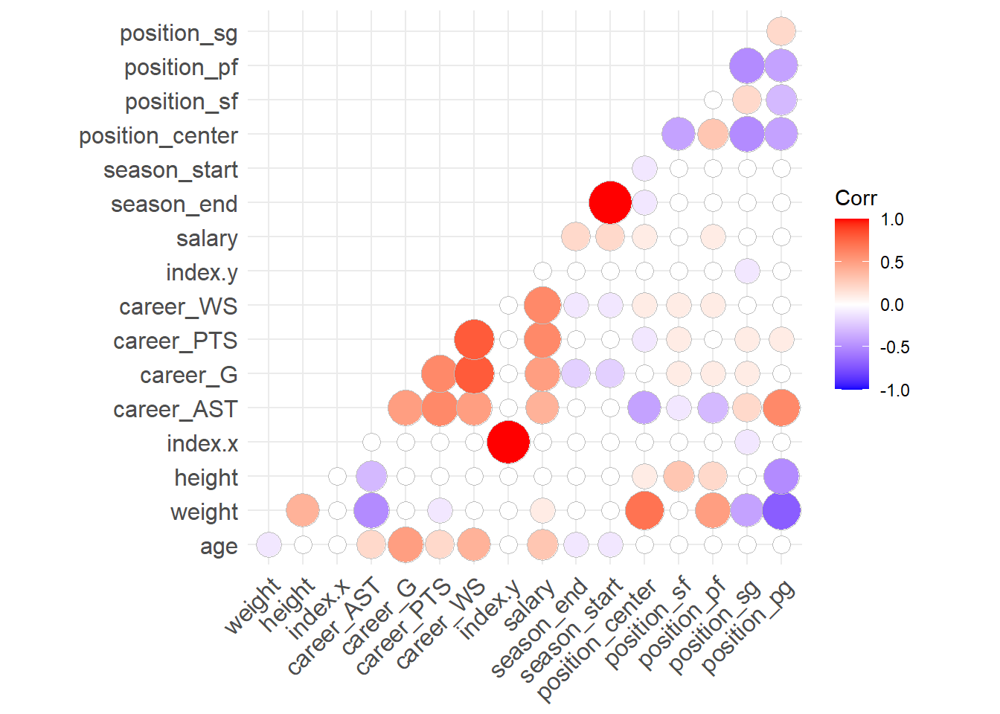
This is interesting for a first look. For example, it seems that the weight is strongly correlated with whatever position you play. Centers are heavy, point guards are light weights. We also see that most performance metrics (“career_…”) are correlated with each other and also with salary. Good players seem to be good in many things, and good players seem to be paid more.
2.10 explore individual variables
Now, that we have a feeling for the whole dataset, we want to explore individual variables. To keep it focused, we want to further explore the question of whether players that score more on average are also paid more.
Maybe roles are clearly divided on the team. Maybe really good passers are highly paid because they give great passes to people who then score. Or maybe teams don’t care about passers and just pay more to people who score more.
So, now, let’s look at salary and average number of points scored by game. Also, we want to know whether point guards (short people who pass a lot) are paid less then other positions (who score more).
First, let’s look how the two continuous variables are distributed:
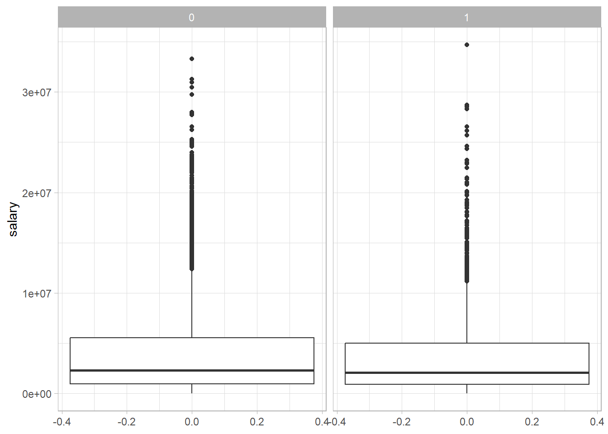
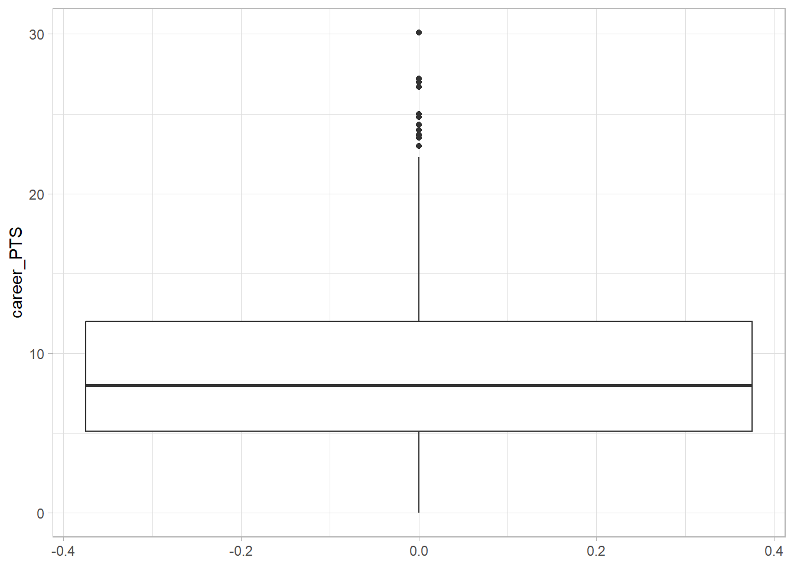
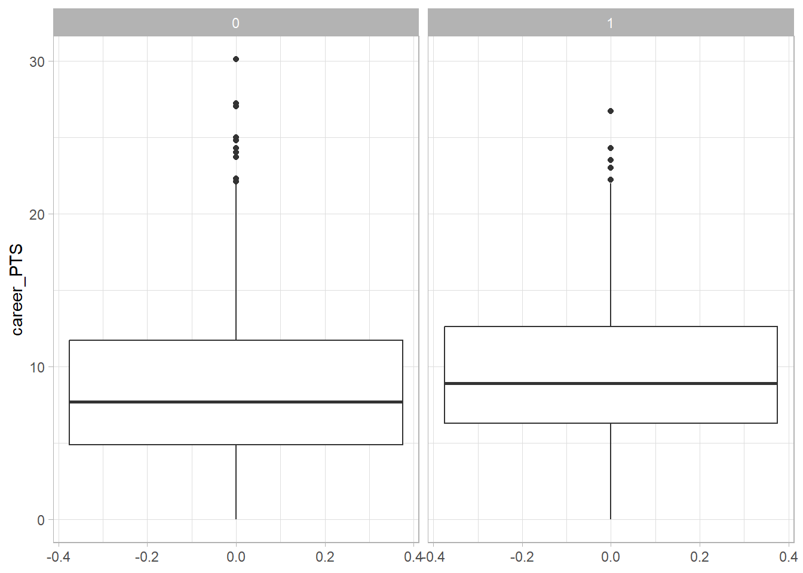
Let’s look at the relationship between salary and position as well as the relationship between position and points.
## num [1:9728] 1 0 0 0 0 0 0 0 0 0 ...## num [1:9728] 798500 1411000 1594920 4500000 5062500 ...## NULLdata_nba %>%
ggplot() +
geom_bar(aes(x = position_pg,
y = salary),
position = "dodge",
stat = "summary",
fun = "mean") +
#xlim(0, 10000000) +
labs(title = "Average salary (Point guard vs other positions)",
subtitle = "this is not that interesting",
caption = "Authors' calculation; NBA data 1998-2018") +
xlab("Player's position") +
ylab("Player's salary") +
theme_minimal()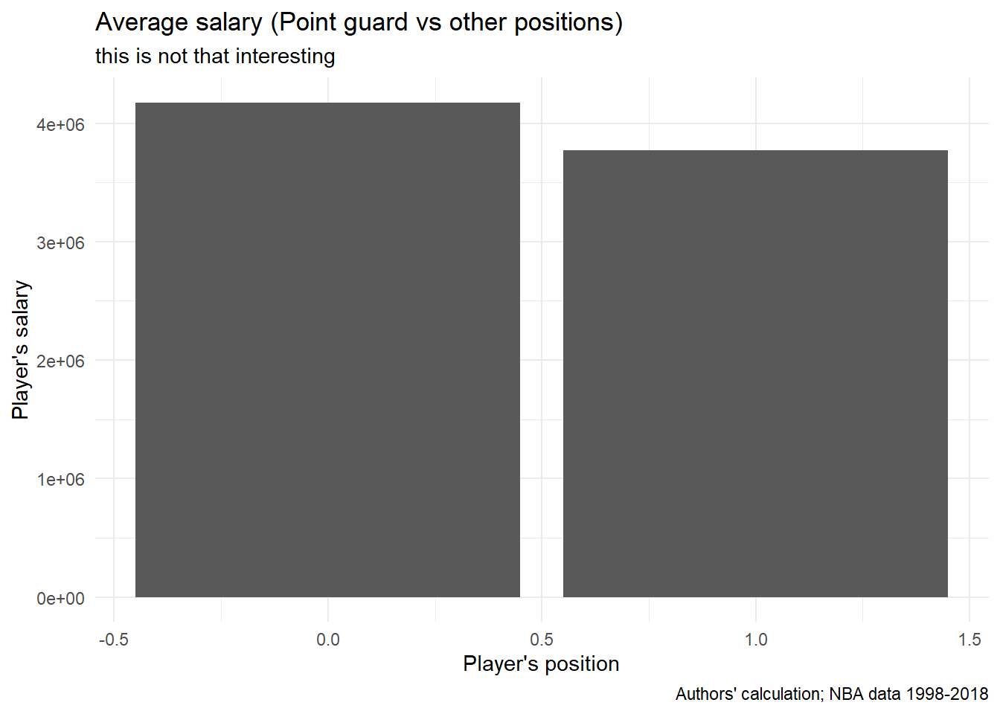
## alternatively:
data_nba %>%
group_by(position_pg) %>%
summarize(mean_salary = mean(salary, na.rm=T)) %>%
ggplot() +
geom_bar(aes(x = as.factor(position_pg),
y = mean_salary),
stat = "identity") +
ylim(0, 6000000) +
labs(title = "Average salary (Point guard vs other positions)",
subtitle = "this is not that interesting",
caption = "Authors' calculation; NBA data 1998-2018") +
xlab("Player's position") +
ylab("Player's salary (in million USD)") +
theme_minimal()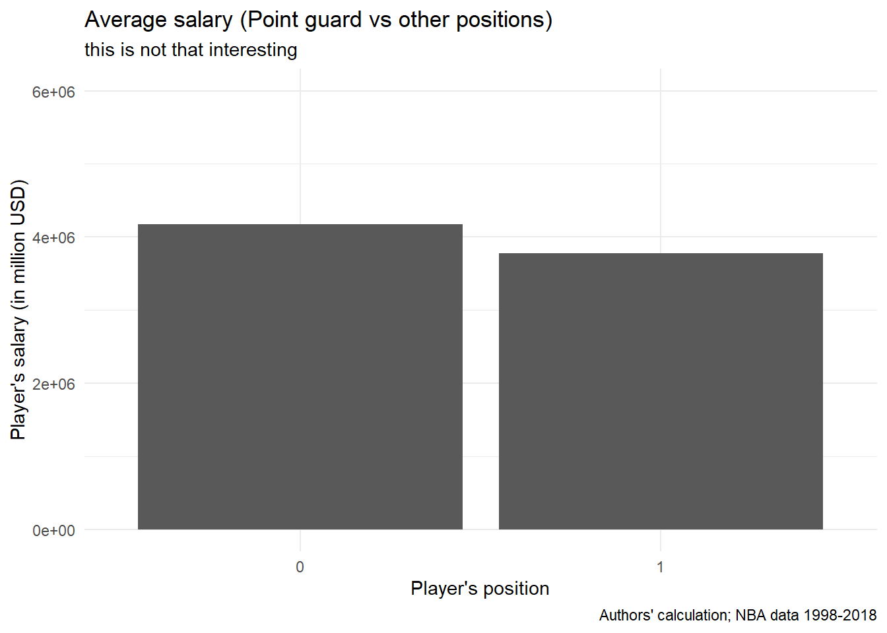
# Now the relationship between position and points:
data_nba %>%
group_by(position_pg) %>%
summarize(mean_points = mean(career_PTS, na.rm=T)) %>%
ggplot() +
geom_bar(aes(x = as.factor(position_pg),
y = mean_points),
stat = "identity") +
ylim(0,15) +
labs(title = "Average points per game (Point guard vs other positions)",
subtitle = "this is not that interesting",
caption = "Authors' calculation; NBA data 1998-2018") +
xlab("Player's position") +
ylab("Points per game") +
theme_minimal()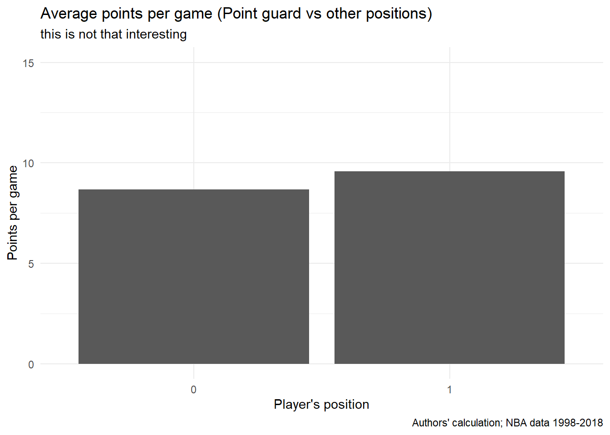
So, it seems that point gards are paid a little less even though they make a few more points on average. Interesting puzzle to explore.
# find example for using histogramm()
# find example for first just creating cross tabs as perecntages tbl_cross(); summarize(); tabyl()Now, let’s explore the relationship which is at the heart of our analysis from now on: salary and average points.
# simple scatterplot
data_nba %>% ggplot() +
geom_point(aes(y=salary, x=career_PTS)) +
theme_minimal()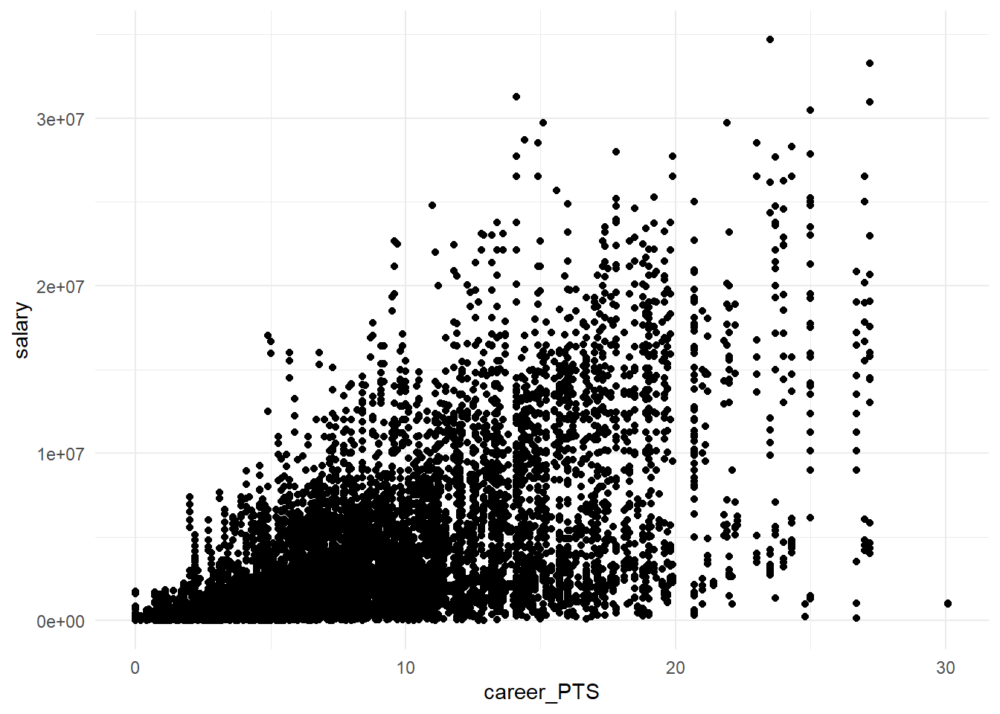
# Now, let's add a line
data_nba %>%
ggplot(aes(y=salary, x=career_PTS)) +
geom_point() +
stat_smooth(method = "lm") +
theme_minimal()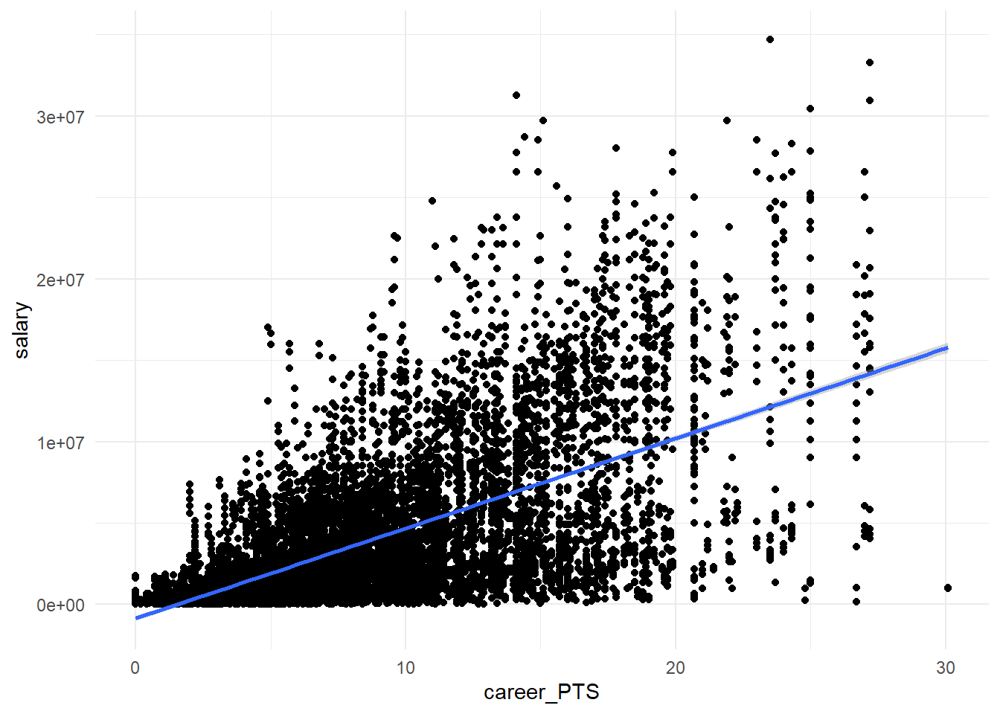
# let's look the relatiship separate for every year
data_nba %>%
ggplot(aes(y=salary, x=career_PTS)) +
geom_point() +
stat_smooth(method = "lm") +
facet_wrap(~season_start) +
theme_minimal()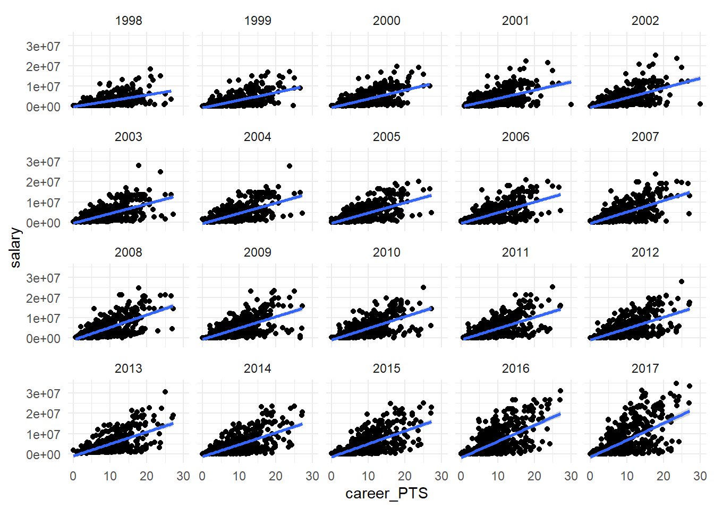
# let's look the relatiship for separate teams
data_nba %>%
ggplot(aes(y=salary, x=career_PTS)) +
geom_point() +
stat_smooth(method = "lm") +
facet_wrap(~team) +
theme_minimal()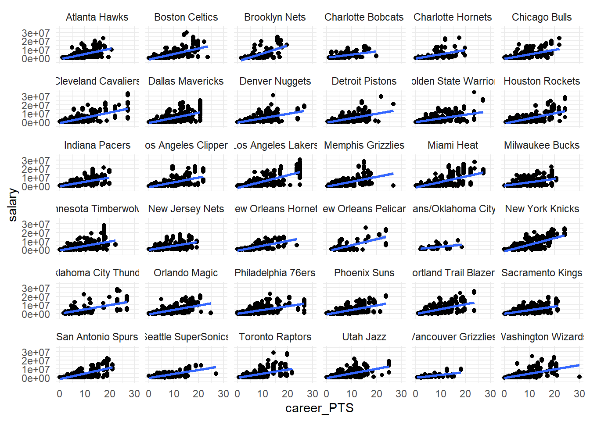
# let's look at it by position
scatter_pg <- data_nba %>% filter(position_pg ==1) %>%
ggplot(aes(y=salary, x=career_PTS)) +
geom_point() +
stat_smooth(method = "lm") +
theme_minimal()
scatter_center <- data_nba %>% filter(position_center ==1) %>%
ggplot(aes(y=salary, x=career_PTS)) +
geom_point() +
stat_smooth(method = "lm") +
theme_minimal()
scatter_pf <- data_nba %>% filter(position_pf ==1) %>%
ggplot(aes(y=salary, x=career_PTS)) +
geom_point() +
stat_smooth(method = "lm") +
theme_minimal()
scatter_sf <- data_nba %>% filter(position_sf ==1) %>%
ggplot(aes(y=salary, x=career_PTS)) +
geom_point() +
stat_smooth(method = "lm") +
theme_minimal()
library("ggpubr")
ggarrange(scatter_center, scatter_pf,
scatter_sf, scatter_pg,
ncol = 2, nrow = 2,
labels = c("Center",
"Power Forward",
"Small Forward",
"Point Guard"))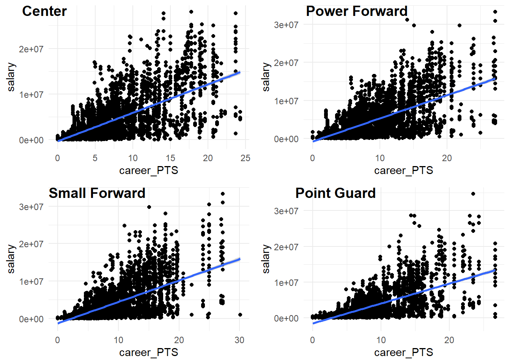
# yet a better way to compare this could be:
data_nba %>%
ggplot(aes(y=salary, x=career_PTS, color=as.factor(position_pg))) +
geom_point() +
stat_smooth(method = "lm",
aes(group=as.factor(position_pg))) +
theme_minimal()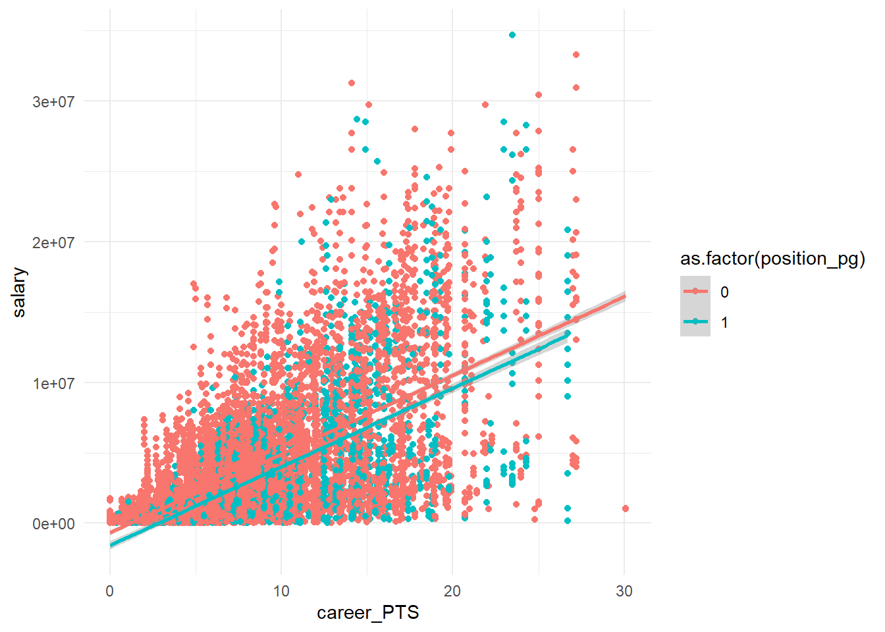
data_nba %>%
ggplot(aes(y=salary, x=career_PTS, color=as.factor(position_center))) +
geom_point() +
stat_smooth(method = "lm",
aes(group=as.factor(position_center))) +
theme_minimal()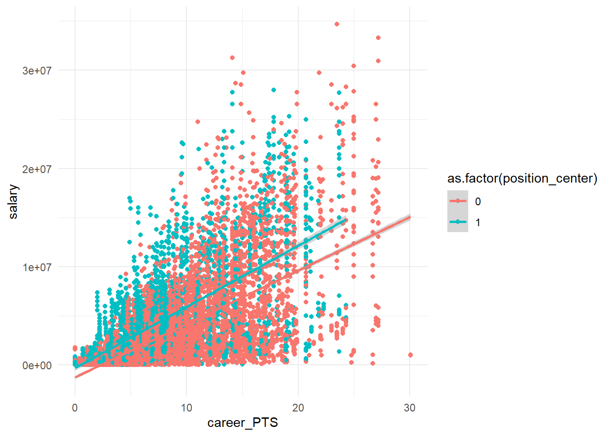
Let’s reflect a moment what we can learn from all this.
First, there seems to be a somewhat linear relationship between how many points a player scores and how much they are paid. This relationship seems pretty robust across years and teams. It also holds true for point guards just as much as for non-point guards. However, the average salary for point guards is lower in comparison. We also learn that the link between salary and points is stronger for centers. They seems to be paid more, the more they score.
We have set the stage now for linear regression (next week). Linear regression is all about further exploring the relationship between two variables, one outcome (often called “y”) and one independent variable (often called “x”). Independent variables have many names. They are sometimes called “covariates”; “predictors”; “exposure”, depending on the context.
There are a number of cool things that regression can do for us that simple EDA cannot:
It can model the relationship between two variables while considering simultaneously the potential influence of other factors. Image we are interested in the effect of points per game on salary regardless of position, season or team. With regression we can estimate how much more a player would ear every season if he scored 10 more points a game (regardless of the position he plays).
It can assess what explains the effect of one variable on another (i.e. mediation). Maybe we find that point guards earn less and we want to know why. Is it because they score less? Is it because they play less time on average?
It can be used to predict salaries for players for whom we don’t know the salary or even for hypothetical players. We could also look at the performance trend of players and predict whether they earn more next season or not.